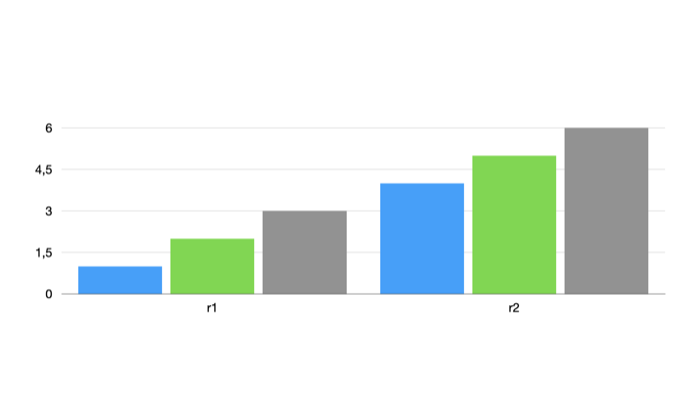

0350: Writing a chart's grouping#
Status: run
A chart's field 10000.5 was read as its grouping into series: 1 by row, 2 by column, with the data grid the same either way (0086). This experiment writes 2 into a chart grouped by row and looks at the slide Keynote exports.
Setup#
| Keynote | 15.4 |
| macOS | 26.5.2 (25F84) |
| Date | 2026-11-10 |
| Input | samples/0297/baseline.key: a bar chart (record 2655552) with rows r1 (1, 2, 3) and r2 (4, 5, 6) and columns a, b, c, grouped by row, in the test theme |
| Writer | [recipes/0302-set-path.py](../recipes/0302-set-path.py) |
Recipe#
mkdir -p samples/0350/img-row samples/0350/img-col
cp samples/0297/baseline.key samples/0350/row.key
python3 -I recipes/0302-set-path.py samples/0350/row.key samples/0350/column.key 2655552 10000.5 varint 2Keynote opened each file on its own and exported its slide as an image.
Observation#
Grouped by row, the chart shows categories a, b and c with two series, r1 in blue and r2 in green. With 10000.5 = 2 it shows categories r1 and r2 with three series, in blue, green and grey, the theme's first three series colours:

Conclusion#
Field 10000.5 = 2 makes the grid's columns the series and its rows the categories. The data grid is untouched, as 0086 found.
Confidence#
Confirmed: chart field 10000.5 is the grouping, by writing it.